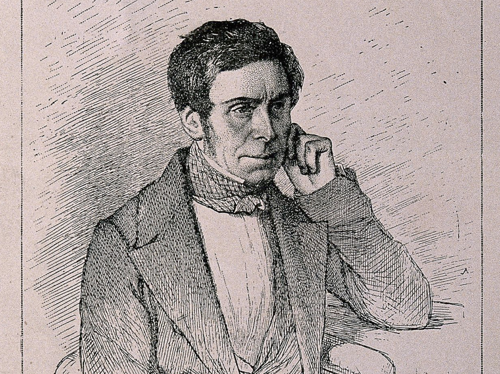

The origin of life debate has never been civil
One of the most interesting questions in science, the question of life's origins has been a can of worms since before we could agree on where worms came from.
By Elise Cutts in Astrobiology
January 14, 2021

The public origin of life debate sometimes feels like a parallel universe to the scientific one. And in many ways, it really is a parallel debate.—the big questions have almost nothing to do with one antoher and, more fundamentally, the battle raging beyond the ivory tower has more to do with faith than research. According to a 2019 Gallup poll, 40% of Americans believe that God created humans in their current form no more than about 10,000 years ago. And if that’s your view, it doesn’t much matter whether the person you’re debating thinks that life got started at a hydrothermal vent on the bottom of the ocean or in a warm little pond of primordial soup. That’s just not the point.
Given that the creationism debate tends to pit “science” vs “religion,” there isn’t usually much room (and often too much risk) to dig into the finer points of current scientific thought on life’s origins. Putting up a divided fron’t isn’t usually a great way to win an argument, and and given that evolution is one of the most important cornerstones of modern biology (including the ongoing research on COVID-19 that will eventually allow life to return to normal), it’s best not to mess around. It’s better to stick to the main line: Researchers almost unilaterally agree that all life evolved from a common ancestor, and that life must have emerged from non-life at least once at least 3.5 billion years ago.
But that’s about where the agreement ends. And where the disagreement begins, so does the nastiness. Ask anyone with so much as a toe in the astrobiology waters and they’ll tell you that the origins debate is a can of worms best left unopened unless you’re writing a thesis in worm physiology.
And interestingly, it’s not clear that there was a time in which that wasn’t the case—even back before we could agree where worms actually come from.
Up until the mid-19th century, the most important scientific question regarding the origin of life was that of spontaneous generation. Spontaneous generation was the belief that new living things regularly formed out of non-living material without descent from other living things. Small animals like insects and organisms like fungi, plants, and fish whose reproductive cycles either don’t look like ours or are hard to observe in particular were thought to arise this way. Leave food to rot and it will turn into flies and mice. Leave a pile of soil for a while and you’ll cook yourself up a fresh batch of worms.
That disproving this idea was a major step towards our current understanding of evolution and the common descent of life has something of an ironic aftertaste today considering that today’s origin of life debate hinges entirely on how such “spontaneous generation” might really have happened—how physics, chemistry, and geology could come together to produce biology. One should not be too hasty to throw today’s hypotheses into the same, sinking boat as spontaneous generation, however. Beyond the obvious distinctions to be drawn between modern research and the natural philosophy of bygone centuries, abiogenesis as we conceptualize it today and spontaneous generation are very different ideas. Spontaneous generation was considered to be a commonplace process necessary for replenishing populations of certain organisms, but researchers now tend to consider the origin of life to be a rare, potentially once-in-a-universe event requiring very specific circumstances unique to the early Earth—and which is definitely not how worms are made.
There are documented experiments on spontaneous generation dating back as far as the 16th century, and throughout the 18th century researchers produced a series of results that we today would probably accept as conclusive evidence that broth does not spontaneously transform into bacteria and that you can’t whip up a fresh batch of mice from soiled cloth and a bit of old grain. That the old doctrine would be tested during this time makes perfect sense when seen in the light of another doctrine—the Catholic church had espoused spontaneous generation throughout the Middle Ages but had made an about-face on the topic by 1668 when Francesco Redi performed his famous experimentst proving that maggots that appear on rotting meat arise not from the meat itself but rather from eggs laid by flies.
Read a bit of the scientific discourse from this time and it becomes clear that acrimony in origin of life debates is more a case of common descent than spontaneous generation. Scottish entymologist James Rennie, for instance, devoted the entire first chapter of his 1838 book Insect Transformations to discussing and debunking the spontaneous generation of insects and wrote scathingly of some of his contemporaries who claimed to have observed spontaneous generation of microorganisms under the microscope:
The experiments of Redi on the hatching of insects from Eggs, which were published in Florence in 1668, first brought discredit upon this doctrine [of spontaneous generation], though it had always a few eminent disciples. At present it is maintained by a considerable number of distinguished naturalists, such as Blumenbach, Cuvier, Bory de St. Vincent, R. Brown, etc. … It would be unprofitable to go into any lengthened discussion upon this mysterious subject; and we have great doubts whether the ocular demonstration by the microscope would succeed except in the hands of a disciple of the school. Even with naturalists, whose business it is to deal with facts, the reason is often wonderfully influenced by the imagination.
Rennie, 1838
Still, spontaneous generation stuck around despite mounting evidence and a pinch of herecy, and remained popular in serious scientific circles by the mid-19th century. This was especially true in Germany among the Naturphilosophen—so naturally the inverse trend held in neighboring (and often enemy) France.
In the late 1850s, Louis Pasteur performed a series of experiments on spontaneous generation very similar to previous work by John Needham in 1745 and Lazzaro Spallanzani 1768. Spallanzani’s experiments, which were an elaboration on Needham’s, involved boiling broths in sealed flasks with the air inside partially removed to prevent explosions under heat. He observed that flasks prepared in this way would never spoil so long as they were left unopened, but that opened flasks spoiled quickly. Some rejected Spallanzani’s results claiming that air was necessary to transform the broth into new organisms, but by Pasteur’s time there was already a strong current of thought against spontaneous generation. By performing the Spallanzani experiments with swan-necked flasks, which allowed air to enter the flask but prevented microbes from reaching the broth, Pasteur was able to address that final objection.
More interestingly and only seldomly noted, Pasteur’s work with the swan-neck flasks was preceeded by a series of outrageous experiments in which he hauled sealed bottles of broth out to locations around Europe—including up to glaciers in the Alps—to test his hypothesis that there might be more germs in the air in some environments than in others. He also apparently bottled air from these places, took it back to his laboratory, and repeated the test there. As crazy as this sounds, it worked—we’re so used to thinking that germs are everywhere now that it almost seems absurd that there’d be fewer of them, say, on a mountaintop. But it’s true. Alpine air isn’t sterile of course, but there are fewer bacteria in places where there is less food to sustain them. So the flasks opened in fresh mountain air tended to spoil less often on average than those opened elsewhere. These results lended strong support to the idea that germs not only existed but that they could be unevenly distributed in space, ultimately leading to Pasteur’s realization that germs could be physically separated from air and culminating in the more famous swan-necked flask experiments.
However, as neat and tidy as the Pasteur experiments may seem now—and how neatly and tidily the matter seems to have been settled according to every ‘history’ info box in every biology textbook I’ve ever read—spontaneous generation did not go down without one last, nasty fight.
Félix Archimède Pouchet, a prominent naturalist 22 years Pasteur’s senior, vigorously opposed the results. He even went so far as to run the swan-neck flask experiment himself, and claimed to have observed results that contradicted Pasteur’s. And according to Albert Keim’s 1914 biography of Pasteur, the conflict didn’t stay confined to academia for long, either.
Both parties made experiments on their own behalf, and each experiment gave different results. These polemics spread beyond scientific circles to the daily press, and, since the question of religion was involved, the public took sides for one party or the other, according to their individual opinions…
Keim, 1914
Some analyses of the debate have also ascribed some of the antipathy towards spontaneous generation in France to its association with German academic and cultural currents. So the religious, political, and scientifc were very much intertwined, much as they are in today’s creationism vs. evolution debate.
Even acknowledging the important social stakes of the Pasteur-Pouchet debate, that the two researchers and their supporters seem to have consistently “reproduced” one another’s experiments and reported different results might actually be the most serious break from scholarly civility in this debate. Both sides essentially accused one another of either purposely falsifying results or subconsciously fudging experiments so that they’d be consistent with their desired outcomes. That is a serious accusation for a scientist to make of another scientist. Questioning someone’s competence is one thing, but questioning their fundamental scientific ethics is quite another.
The Keim biography goes on, spilling generous ink to paint this scholarly debate in belligerent terms. And while the author tends towards hyperbole, he doesn’t discuss Pasteur’s other discoveries in the same wartime vocabulary. And even in more sober retellings, there’s no doubt that eventually the situation drew the attention of the French Academy of Sciences, which decided to force a resolution.
The conflict assumed epic proportions. The sessions of the Academy of Sciences caught the echoes of it, each theory having its partizans, and each experimenter his enemies.
Keim, 1914
In 1862, the Academy announced a prize to go the researcher whose results, as judged by an Academy committee, best addressed the question of spontaneous generation. When Pasteur was declared the winner in 1862, spontaneous generation was essentially declared disproven by one of the most important scientific bodies in Europe.
According to Keim, Pouchet and his chums refused to accept even this defeat and demanded one last chance to run their experiments for the Academy before mysteriously dropping the issue at the last minute on the day planned for the trials. Final humiliation for Pouchet or no, “after a hard campaign of several years Pasteur was at last triumphant.”
Some of the historical Pasteur-Pouchet clash echoes in today’s disputes on the origin of life. And most tellingly in my mind, so has the public interest. True, public interest in the origin of life may have more closely reflected the actual state of research on spontaneous generation in Pasteur’s day than today’s mainly creationism-evolution oriented public origin of life debate tracks with modern scientific thought on the origin of life. But the core of that broader appeal is the same: the origin of life is a question that reaches far beyond the laboratory and touches that deeply human hunger to know where we come from and why we’re here. When we ask why debates on the origin of life within science sometimes get as heated as they do, it might help to remember that scientists feel that hunger too.